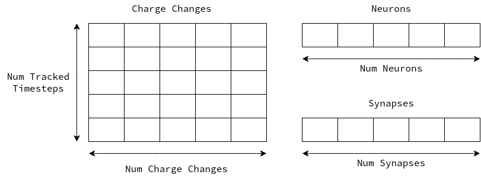
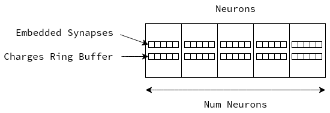

Effectively Simulating a Neuromorphic System
The Problem
Neuromorphic computing is a proposed alternative computing model that draws heavy inspiration from the functionality of neurons and synapses in the human body. It has come into the spotlight as the progression of Moore’s law steadily slowed. Neuromorphic hardware is gradually becoming more popular, with examples like Intel’s Loihi, IBM’s True North, and many other examples from independent research labs (Davies et al. 2018; Akopyan et al. 2015; Daffron 2015). Now computing needs to evolve to take advantage of massively parallel hardware as the speed increases of an individual processor core stagnates.
Naturally, the computing model of neurons and synapses is inherently parallel, which poses a large challenge when attempting to simulate these systems on traditional hardware. In this article we will look at 2 high level approaches for simulating neuromorphic systems on a single core CPU, one traditional, and one optimized for densely connected highly active networks. This choice should allow the findings to be applicable to the widest range of embedded neuromorphic applications.
Introduction
In order to simulate a neuromorphic system on non-neuromorphic hardware, some level of emulation must be performed. This means simulating both the communication between individual neurons (via synapses), and the storage of charge within an individual neuron. To simplify our model for better understanding we will make the assumption that all charge is leaked from a neuron at the end of each time step.
It should also be noted that the optimizations explored here are focused strictly on improving performance in a densely connected network, with high levels of activity. A sparsely connected network with low activity would require different optimizations.
For the purposes of this article we will be analyzing a neuromorphic implementation of the DBScan algorithm (Ester et al. 1996; Rizzo and Plank 2024). The DBScan algorithm both de-noises an image, and highlights areas of interest, which are identified by the density of data. This means that our network is expecting high levels of input activity, a perfect scenario for the optimizations explored. Another key consideration of neuromorphic DBScan is that the networks are densely connected, with most neurons having 3-4 outgoing synapses. Once again, this means that embedding synapses directly within neurons should net an overall benefit, due to the densely connected nature of our network.
DBScan works by analyzing each pixel and determining how many other pixels are in its “neighborhood”, if the number of pixels meets or exceeded at set threshold than that event is considered a core event. The other two possible classifications are border and noise, where border events are defined as a pixel with a core event within its neighborhood. Every other event is classified as noise, and for most purposes would be ignored. Both the parameters for neighborhood (epsilon), and threshold (minimum points) are tunable, with an increase in either parameter resulting in a corresponding increase in network size.
The network used for testing had 2345 neurons and 6488 synapses, which is on the upper end for an embedded neuromorphic application. Typical neuromorphic networks for classification or control tasks end up in the tens to hundreds of neurons range (Ambrose et al. 2020; Ghawaly et al. 2022; Patton et al. 2021; Schuman et al. 2020), meaning that neuromorphic DBScan is one of the largest networks deployed in an embedded application.
Simulation Approaches
General Overview of the Current System
As the system stands currently, each neuron is located in a large array, referenced by its index. Similarly, all the synapses occupy their own spot in an array. These two structures alone are nothing surprising, as each of these objects needs to exist in memory in some form. We can then reference neurons via their index, with each neuron also storing the indices of its synapses.
The unique part of this system is an event queue to store spikes as they occur. Each network has some upper bound of delay (associated with each synapse) that must be representable within the simulation. You can think of this as the longest possible time in the future that an event may need to fire. As these networks are run continuously the time steps will eventually wrap back around, reusing space as the simulation moves along.
Each index in this array has the capacity to store a fixed number of events, which again comes from the characteristics of the network. This means that at any given time we need to have the capacity for every neuron to fire, and propagate a spike to their downstream neurons.
Priority Queue

One of the major benefits of a neuromorphic system is that it operates on events, and subsequently produces more events. An event-based simulation lends itself to a lazy approach, where only the “active” parts of a network require computation. A common implementation uses an event queue (or priority queue), where individual spike propagations are enqueued, which are then applied to the network at a later time. This approach allows for sparse networks to save on simulation cost when little activity is present.
Due to the delay of any given synapse having some fixed upper bound in networks, there is no need to maintain a dynamic priority queue, instead each discrete time step can have its own pool of events. By providing a fixed location for events to be stored we can effectively eliminate the need for dynamic memory allocation, while maintaining the same advantages of a priority queue. The issue now comes when considering the memory footprint of such a solution.
Each possible time step needs to have the capacity to hold that maximum number of events possible in the network. Therefore, even though this solution is optimized to perform the smallest amount of computation under low network activity conditions, it always consumes more memory.
Internal Ring Buffer
Instead of storing sparse events in a global container, we can instead store the “upcoming” state of each neuron internally. Our approach takes the form of a ring buffer within each neuron to store the effective charge at each offset from the current time step. Under this approach each time a neuron fires it propagates a spike down each of its synapses, adding its weight at some offset in the downstream neurons ring buffer. This ring buffer is then reused in much the same way as the event queue described previously.
This has the benefit of integrating events into their final sum at the time of firing, reducing the number of tracked states drastically, thus reducing memory used. On processors or platforms with limited cache, reducing the overall memory footprint of a simulator can have large benefits on the simulation speed. This is especially important on microcontrollers where limited or no cache is available to speed up execution.
Another benefit of this approach is the improved spatial locality. Instead of interacting with a large global container storing all activity, we are directly writing/reading from a single neuron at a time. Large arrays are likely to not be entirely resident in cache, meaning we will take the penalty of a cache miss more frequently as we jump around to different time steps. In contrast, the embedded ring buffer approach not only lowers the overall size in memory, but it also reduces the number of possible memory location we can write to.
However, due to the shift in how our network is represented in memory our computation will also need to change. We can no longer act on only active neurons, which is a tradeoff we must make in order to support densely connected networks with high activity. Now we iterate through each neuron, checking for to see if it should fire, continuing on if not. If the neuron should fire we begin iterating through each of its synapses to apply a charge to any downstream neurons. With this computation model, leak can be applied within the same loop as charges are propagated, further increases time savings.
Again, microcontrollers are less sophisticated and thus have much shallower pipelines, leading to less overall cost to branching. Therefore, we can pay the cost of checking if each neuron should fire and still achieve a speedup over the event-based simulation due to the much lower pressure placed on memory.
Embedded Synapses

In an effort to further reduce our program’s memory footprint, we can also eliminate the global array of synapses. To allow our system to support a reasonable number of neurons/synapses they are referenced with a 2 byte index (65536 possible indexes). The issue is that a synapse itself is only 4 bytes in total, therefore a 2 byte index is a 50% overhead.
Each synapse represents a relationship between exactly 2 neurons (or a recurrent connection between a neuron and itself), and they are never shared, meaning that a synapse can be embedded within the upstream neuron. This change eliminates the need for the 2 byte index, and further improves spatial locality by bundling neurons with their associated synapses.
It should be noted that this approach requires each neuron to have the capacity for the same number of synapses. This would likely be a downside for a sparsely connected network, but it proves to be beneficial in networks with dense connectivity.
Results
| System Description | Mean | Max. FPS | % Gain | Observed FPS | % Gain | Approx. Size |
|---|---|---|---|---|---|---|
| Event Based | 10.512 | 7.610 | -- | 5.103 | -- | 150Kb |
| Neuron Ring Buffer | 7.973 | 10.034 | 31.9% | 6.057 | 18.7% | 68Kb |
| Embedded Synapses | 7.817 | 10.234 | 34.4% | 6.132 | 20.2% | 60Kb |
The original event based simulator was ported to run on a RISC-V microcontroller (Milk-V-Technology, n.d.), although the hardware used is not necessary to be familiar with to see the benefits. As a starting state we observed a theoretical 7.610 FPS, with approximately 150Kb of memory utilized to run the simulation. This architecture requires more memory than we have L2 cache, meaning that at no point can the entire simulation be held in cache.
Switching from the original event based model to each neuron holding an internal ring buffer drops the overall memory usage from 150Kb to 68Kb, meaning that a simulator can now much more easily fit in a system’s cache. Additionally, moving to this computation model further improves performance to a theoretical 10.034 FPS, a 31.9% improvement. This is the largest jump we observed in FPS, which makes sense due to the significant architectural change.
Lastly, embedded synapses within a neuron netted a smaller performance increase, resulting in 10.234 FPS, a 34.4% increase over baseline. This architecture also further lowered memory consumption down to 60Kb. Embedding synapses within neurons may not be beneficial for all use-cases, and further exploration is needed to find the cutoff point.
Discussion
Clearly different approaches benefit different network configuations, and exploration is needed to tailor the simulator to a specific application. Although the major benefit of neuromorphic computing is its asynchronous approach, not every appication can share those same characteristics. For this application the difference is largely due to the hand-built nature of the network, as opposed to a network produced through evolutionary optimization.
The input and output space can also play a large role in the resulting complexity of the network. Specifically, for image based applications we generally need one input neuron per pixel, or some portion of the input space. This large input space leads to a highly active network, making it a perfect candidate for the optimizations described above.
Reducing the memory footprint of our simulator both improves the simulation speed, and allows us to fit larger networks on constrained hardware. For the purposes of embedded DBScan this means with can either support a higher resolution camera, or we could utilize the tunable network parameters to increase the effectivness of the algorithm.
Future Work
In the future it would be beneficial to explor how this computational model can scale to other architectures. As stated before the simulation of a neurmorphic network can be scaled in parallel to more closely mimic biological neurons and synapses. For instance porting the simulator to a GPU to take advantage of the high core count and memory bandwidth.
Flip the Script & Parallelism
Thus far, we have focused on optimizations for a lower power, potentially single-core processor, yet our system is trying to simulate parallel operation. If hardware is present that enables parallel processing the current model would not scale well to many units of execution. This is due to the fact that we would have contention around “firing” events. If we imagine each neuron executing independently, two separate neurons may fire, resulting in two spikes propagating to a downstream neuron at the same time. This is the classical i = i+1 problem in computer science.
Instead, if we think about this problem from the perspective of the downstream neuron, we all but eliminate this issue. Instead of having each neuron propagate a charge downstream, we can have neurons look at their upstream neurons to determine if they fired. This is a bit of backwards way to think about things, but it enables potentially massive parallelism.
There are some potential downsides to this parallel approach. First, the system now requires 2 full iterations over all neurons, one to collect charges from all neurons which have fired on this time step, and a second to apply leak to the network. Second, our memory access pattern is much more unpredictable, however, with sufficient parallelism this benefits will outweigh the costs.
Conclusion
In conclusion, having the ability to tune a neuromorphic simulator specifically for an application has clear benefits. Networks with dense connectivity are more effectively represent the a regular structure, where each neuron has the capacity to hold the same number of synapses. Applications that require high network activity scale much better by integrating spikes as soon as they occur, instead of processing them at a later time.